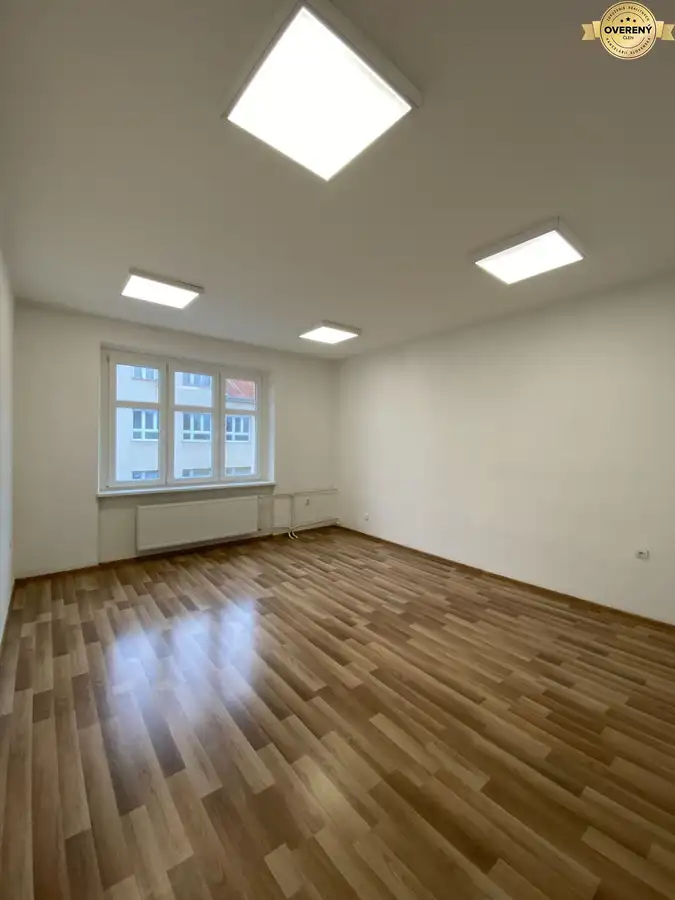
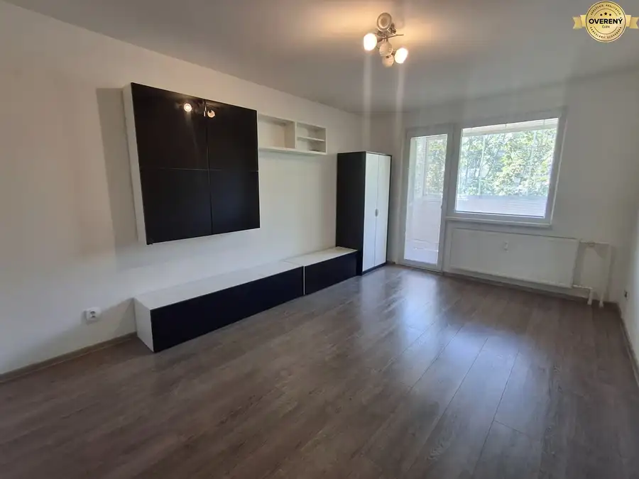
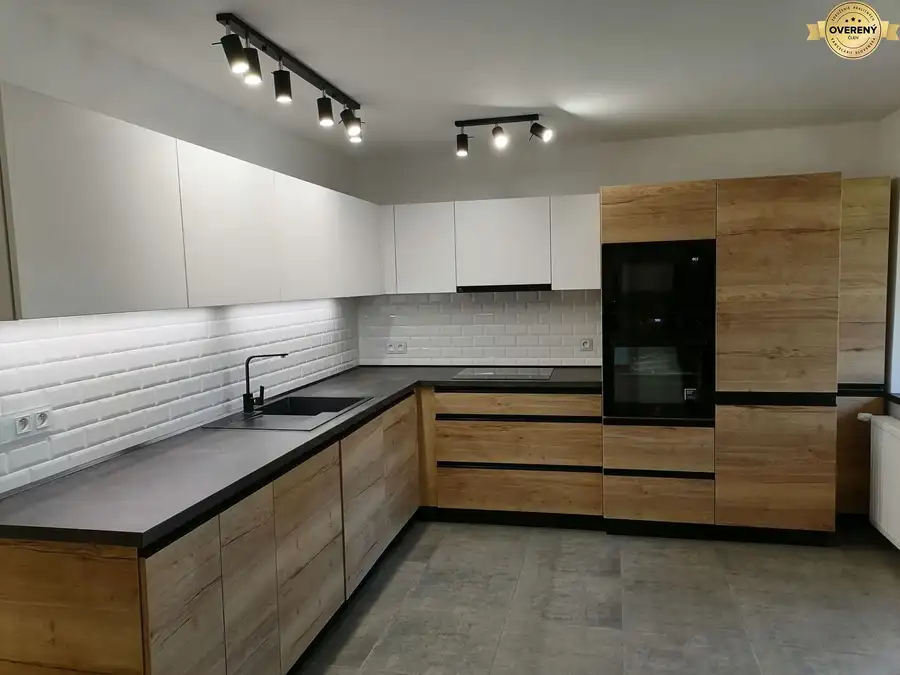

Znižená cena Predaj spoluvlastnícke podiely v pozemkovom spoločenstva
Turčianske Teplice
- Plocha42006 m²
O nehnuteľnosti
Urbár sa rozkladá na celkovej výmere 3 595 951 m² pozemkov, prevažne lesných a trvalých trávnatých porastov, vedených ako spoločné nehnuteľnosti podľa zákona č. 97/2013 Z. z. o pozemkových spoločenstvách.
Predávané podiely sú riadne zapísané na katastrálnych listoch vlastníctva, bez tiarch a je pripravený na okamžitý prevod novému záujemcovi.
Katastrálne územie Rakša:
LV 725 - podiel
LV 370 - podiel
LV 474- podiel
Katastrálne územie Horná Štubňa:
LV
Katastrálne územie Dolná Štubňa:
LV 1440 podiel
LV 136 – podiel –
LV 179 – podiel 75/12811
LV 178– podiel
Katastrálne územie Mošovce :
LV 1814 –podiel
Spolu výmera podielov 42 006 m².
Pozemky sú prevažne lesné a trvalé trávnaté porasty, vedené ako spoločné nehnuteľnosti podľa zákona č. 97/2013 Z. z. o pozemkových spoločenstvách.
Predávané podiely predstavujú podiel na správe a výnosoch z hospodárenia urbára.
Ideálne ako dlhodobá investícia alebo pre záujemcov o podiely v lesnej a poľnohospodárskej pôde.
Cena: 21 000€ a zahŕňa kompletný právny servis a služby makléra.
Parametre
| Rozloha pozemku | 42006 m² |
|---|---|
| Dátum zverejnenia | 5. 11. 2025 |
Kde to je
Mohlo by Vás zaujímať

Nebytové priestory5 Cena dohodouPonúkame Vám kanceláriu v centre Martina Martin 23 m²2. podlažie Priestor o výmere 23m2 sa nachádza sa na 3. poschodí. Orientovaný je na juh. VYBAVENIE : plastové okná, plávajúca podlaha, prípojka na internet,…
Byt10 Cena dohodouPonúkame Vám do prenájmu 2- izbový byt s balkónom v centre mesta Martin 2-izbový58 m² Byt sa nachádza na ulici Thurzová 3 v tehlovej zateplenej bytovke na 5.poschodí bez výťahu. Byt je veľký, slnečný, orientovaný na sever a juh o…
Byt10 Cena dohodouVeľký 2 izbový byt s lodžiou na prenájom - Štúrovo námestie Martin Martin 2-izbový69 m²2. podlažie Ponúkame Vám prerobený 2 izbový byt s lodžiou v centre mesta na ulici Štúrovo námestie 12 v centre Martina. Byt sa nachádza na druhom poschodí v…